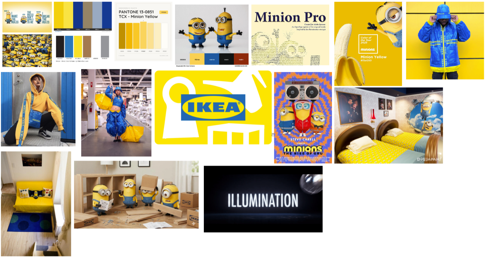
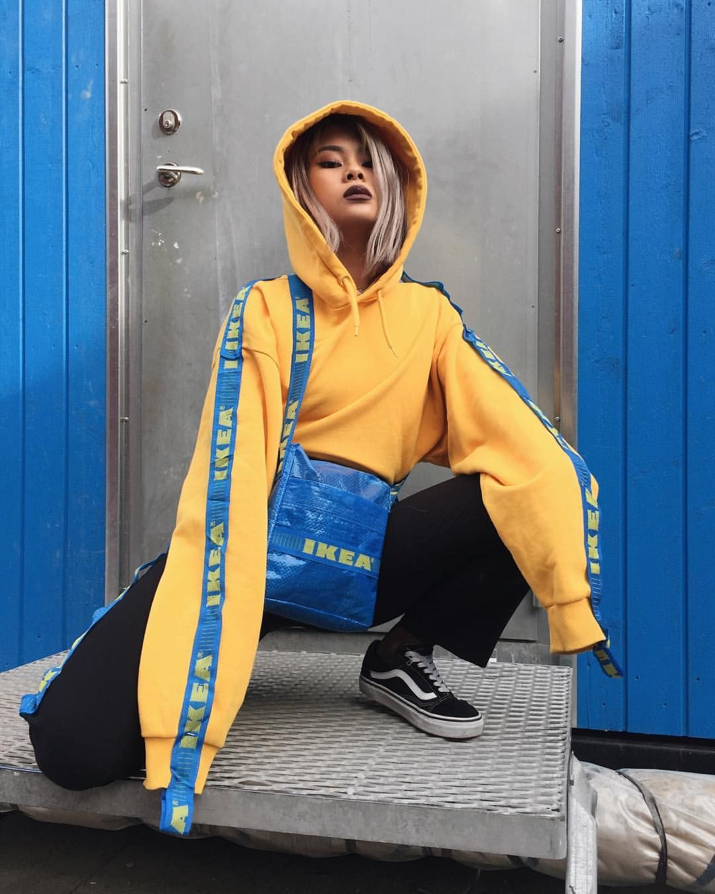
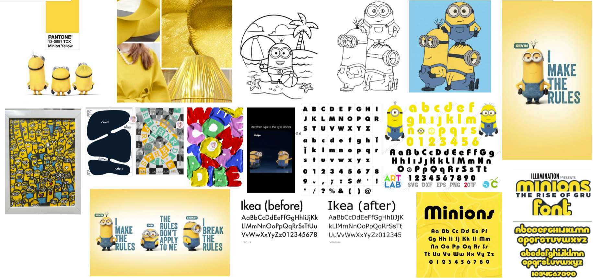

Deep Dive: Fonts, Kleur en Effecten
Deep Dive: Fonts, Kleur en EffectenYou Go Girl
Twan's
De model komt van de CMDA/model fork repository op GitHub.
Deep Dive: Fonts, Kleur en Effecten Deep Dive: Fonts, Kleur en Effecten
Deep Dive: Fonts, Kleur en EffectenEen sectie voor al mijn recente projecten/ concepten!
 Inspiratie: Digi Tuintje
Inspiratie: Digi Tuintje
 Project/ Concept 4: Minions
Project/ Concept 4: Minions
Het eerste deel van mijn ontwerp bestaat uit de minions, vooral het Enthousiast & Opvallend aspect ervan, omdat de minions erg opvallen en kleurrijk zijn wil ik dat doormiddel van interactie terug laten komen op mijn website. Dit doe ik doormiddel van hovers, animaties en overgang (transistions) van elementen op mijn website, zo als de titel, kopjes, afbeeldingen, links en border lijnen.


Het tweede deel van mijn ontwerp bestaat uit de
Ikea, tvooral het Duidelijke & Abstracte aspect
ervan, omdat de kleuren van de Ikea goed passen bij de minions, simpel uit te spreken is en
visueel fijn om naar te kijken is heb ik mijn Digital Garden ook zo vorm gegeven doormiddel
van een zwart, witte achtergrond om een
